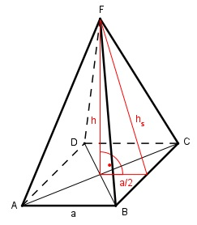

Aufgabe 190 Eine quadratische Pyramide hat eine Mantelfläche M von 434 cm2 und eine Oberfläche O von 783 cm2. Wie groß ist ihr Volumen V?

Oberfläche O = Grundfläche G + Mantelfläche M O = G * M |-M G = O - M G = 783 cm2 - 434 cm2 = 349 cm2 G = a2 349 cm2 = a2 |√ a = 18,7 cm a * hs Mantelfläche M = 4 * --------- 2 M = 2 * a * hs |:2*a M ------- = hs 2 * a 434 cm2 hs = -------------- = 11,6 cm 2 * 18,7 cm Satz von Pythagoras im roten Dreieck: hs2 = h2 + (a/2)2 |-(a/2)2 h2 = hs2 - (a/2)2 h2 = 11,62 cm2 - 9,352 cm2 h2 = 134,56 cm2 - 87,42 cm2 = 47,14 cm2 |√ h = 6,9 cm a2 * h 18,72 cm2 * 6,9 cm V = -------- = --------------------- = 804,3 cm3 3 3